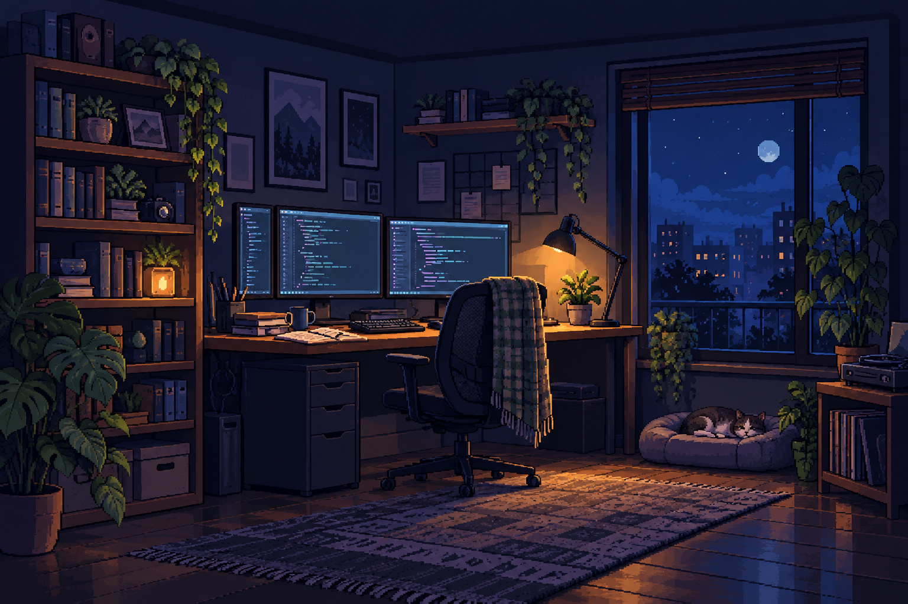

Textile Sewing Services site
A verified project summary will lead into the engineering choices and implementation details.
SECURITY · SOFTWARE · INFRASTRUCTURE
I’m a security analyst and engineer who enjoys working across cybersecurity, software, cloud, and infrastructure.

ART-DIRECTION CONCEPT · NOT FINAL PIXEL ARTA verified project summary will lead into the engineering choices and implementation details.
Published articles only. No demo or placeholder posts appear in the public feed.
THE LAB / EXPERIMENT LOG
Security research and engineering notes from the systems I study and build.
SAMPLE CARD / DRAFT
A concise summary that tells the reader what they will learn and why the investigation is useful.
NOT A PUBLISHED ARTICLESample summary for layout review.
Sample summary for layout review.
SAMPLE ARTICLE TEMPLATE / DRAFT
A clear, factual abstract. Readers can understand the scope before committing to a long technical article.
Body text uses a comfortable reading width, open line spacing, and a modern text face. This is where evidence, diagrams, and explicit limitations belong.
Explain the question and the method before drawing conclusions. Cross-link notes and supporting sources without burying the reader in decoration.
Numbered steps and inline code remain readable on a phone.
$ command --example value
example output
[copy control]
Tables can scroll within their own region. Long code lines do not widen the page.
BUILD LOG / SELECTED WORK
A curated set of software, security, and infrastructure work. Each case study sticks to verified scope and outcomes.
Verified summary. Scope, architecture, key decisions, challenges, and results appear in the case study.
Concise verified description; detailed outcome appears only when source evidence supports it.
Short project summary based on the public repository and confirmed details.
Only include after source and publication permission have been reviewed.
PROJECTS / WEB ENGINEERING / CASE STUDY
A factual one-paragraph overview of the project, intended audience, and what was delivered.
What problem was being solved, who needed the project, and what constraints mattered?
Explain the structure and the engineering choices in plain language, with enough detail to show the work.
Document confirmed challenges and outcomes. No invented metrics, confidential employer details, or unsupported claims.
EXPERIENCE / EDUCATION / CREDENTIALS
Security operations, service engineering, and software development, with a systems-focused computer science background.
Checkout.com · Security Operations
Verified responsibilities summarized with clear, action-led language.
Checkout.com
Verified responsibilities summarized with clear, action-led language.
Tropic Knits Group Ltd
GammaTech Ltd
ABOUT / THE PERSON BEHIND THE SYSTEMS
I like understanding how things work: from the software people use to the infrastructure and security underneath it.
A human account of learning across software, systems, cloud, and cybersecurity. Ground it in real experiences and leave room for interests beyond the résumé.
Outside work: technology experiments, science, pixel art, and cats.
01 / LEARN
Stay curious about the whole system, not only one layer.
02 / BUILD
Turn questions into small experiments and useful tools.
03 / SHARE
Write down what worked, what failed, and what remains uncertain.